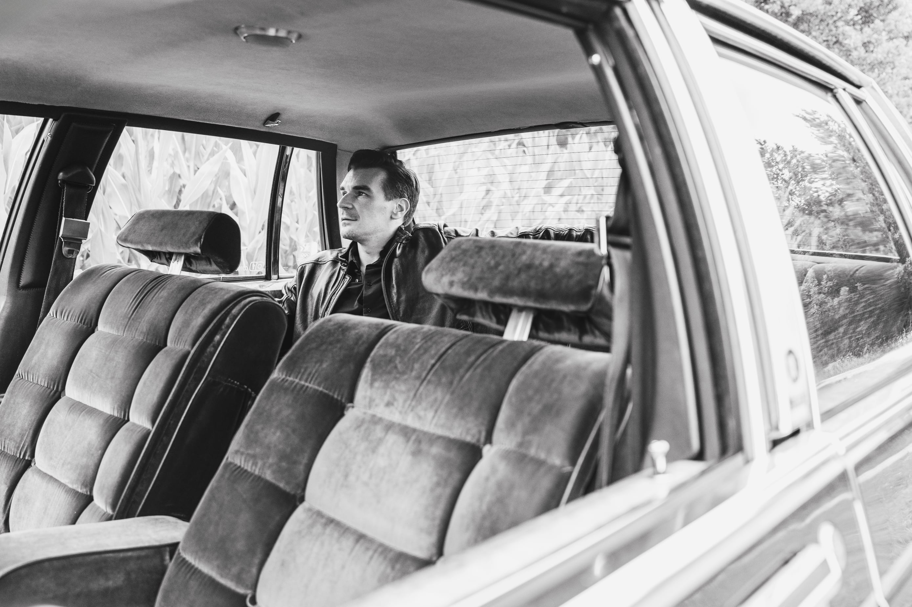
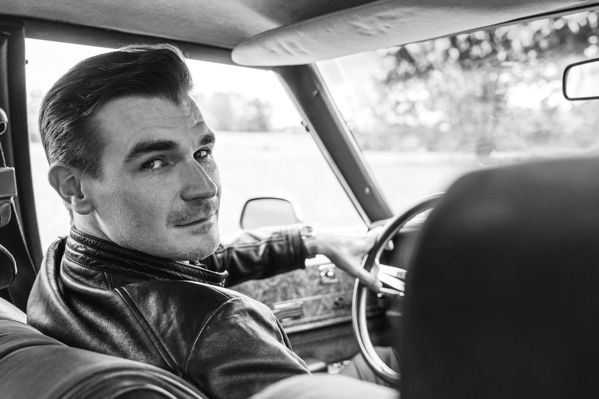
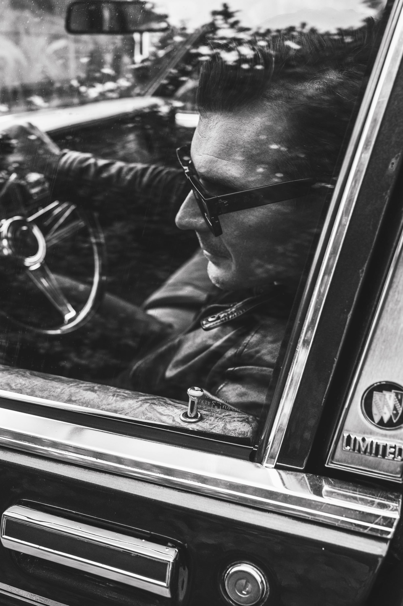
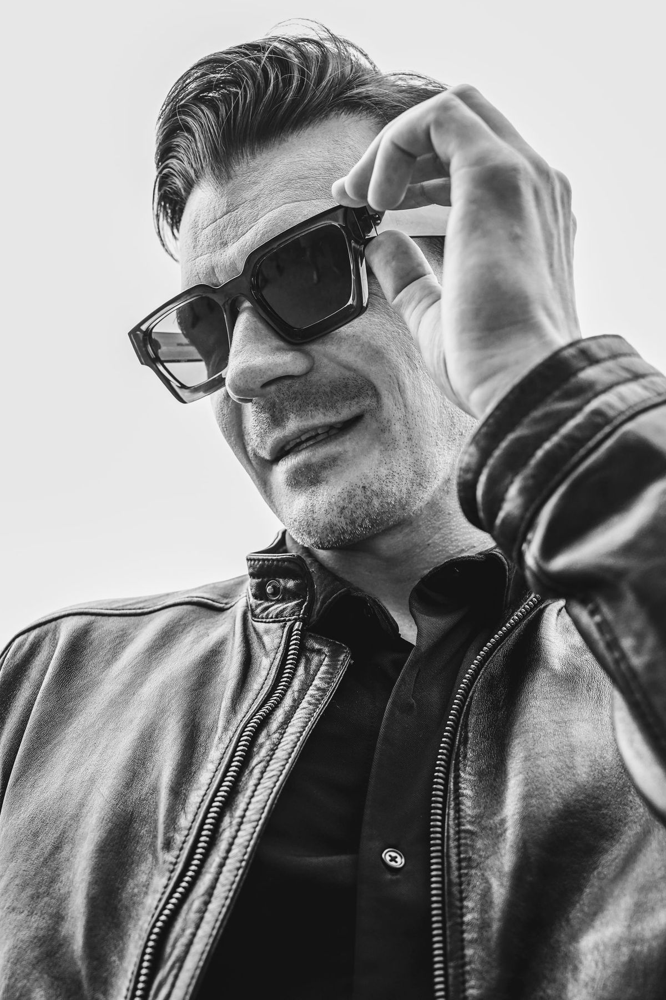
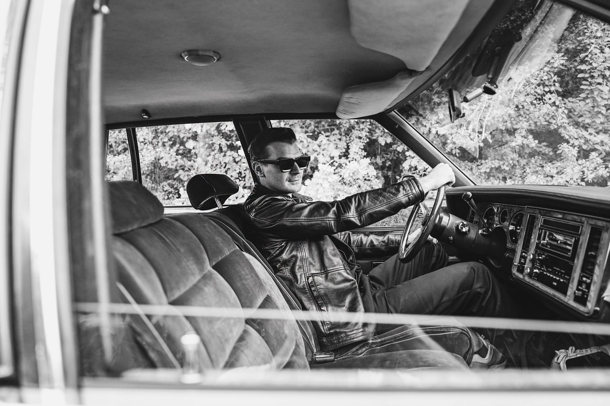
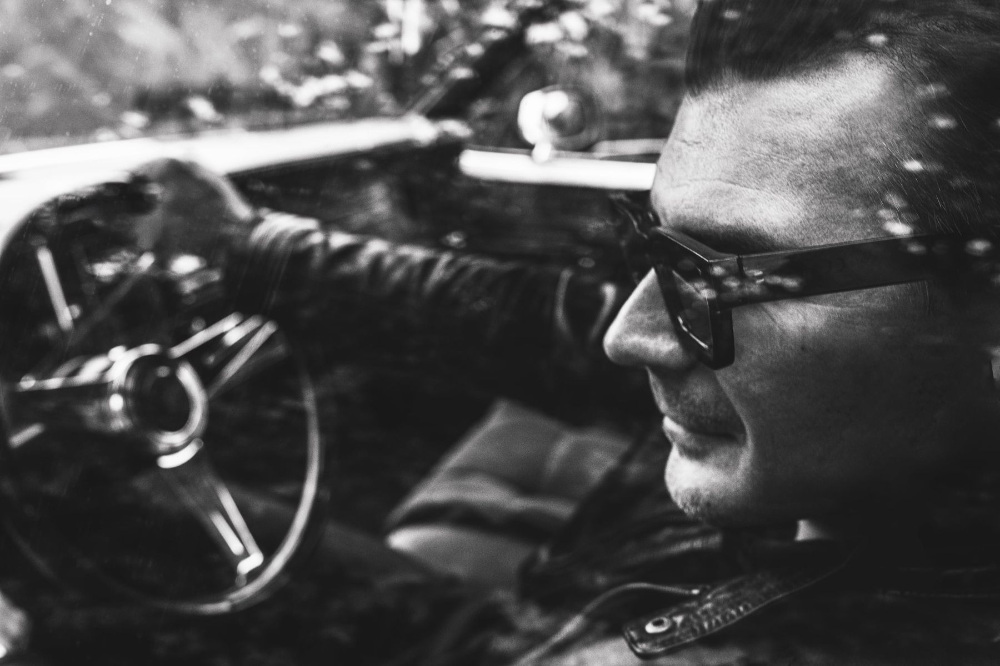

Dyskografia
Wokalista jazzowy · Zwycięzca Montreux Jazz Voice Competition · Doktor sztuk muzycznych
Polski wokalista jazzowy, który z gracją i pasją łączy tradycję swingu z nowoczesnymi technikami wokalnymi. Absolwent Instytutu Jazzu Akademii Muzycznej im. Karola Szymanowskiego w Katowicach. W śpiewie swobodnie posługuje się zarówno słowem, jak i scatem.
Od 2015 roku nieprzerwanie otrzymuje tytuł Wokalisty Roku w prestiżowej ankiecie Jazz Top miesięcznika Jazz Forum — po raz dziesiąty z rzędu. Zwycięzca I nagrody i nagrody publiczności w Shure Montreux Jazz Voice Competition (2013) — konkursie organizowanym w ramach legendarnego Montreux Jazz Festival w Szwajcarii. Laureat Grand Prix Jazz Voices na Litwie (2011) oraz nagrody Największa Indywidualność na Bielskiej Zadymce Jazzowej (2010). Jego talent sceniczny można było podziwiać na festiwalach w Szwajcarii, Holandii, Australii, Bułgarii i na scenach całej Polski.
W 2025 roku wystąpił na Gali Muzyki Jazzowej Fryderyk Festiwal, prezentując wspólnie z Leszkiem Możdżerem i Atom String Quartet piosenkę „Zielono mi" w hołdzie dla Jana „Ptaszyna" Wróblewskiego. Był też gościem Artura Andrusa w jego audycji Nie do mówienia w RMF Classic — posłuchaj rozmowy.
W styczniu 2026 roku wziął udział w Film Song Festival w Operze Nova w Bydgoszczy, gdzie wystąpił u boku uznanych amerykańskich artystów: Wayne'a Linseyego, Paula Jacksona Jr., Davida Delhomme'a i Teddy'ego Campbella.
Jest także cenionym pedagogiem akademickim — doktorem sztuk muzycznych, wykładającym w Akademii Sztuk Teatralnych w Krakowie.
Młynarski. Bynajmniej. (2024) — jazzowa reinterpretacja piosenek Wojciecha Młynarskiego z 22-osobową orkiestrą Aukso.
Celebrating the Journey (2022) — muzyczna retrospekcja dekady z Bogusławem Kaczmarem, Michałem Kapczukiem i Szymonem Madejem.
Love Revisited (2014) — duet z Pawłem Tomaszewskim, głębokie interpretacje jazzowych ballad.
We'll Be Together Again (2010) — debiut z własnym kwintetem, klasyczne standardy jazzowe.
Akademia Sztuk Teatralnych im. St. Wyspiańskiego w Krakowie (od 2018)
Instytut Jazzu AM im. K. Szymanowskiego w Katowicach (2012–2019)
Wczytywanie…

„Wojciech Myrczek jawi się jako wytrawny mag jazzowego śpiewu, pogodnej, swingowej wokalistyki zawieszonej gdzieś między elegancją Franka Sinatry a przebojowością Michaela Bublé"Dionizy Piątkowski · jazz.pl





Dla organizatorów
Materiały prasowe